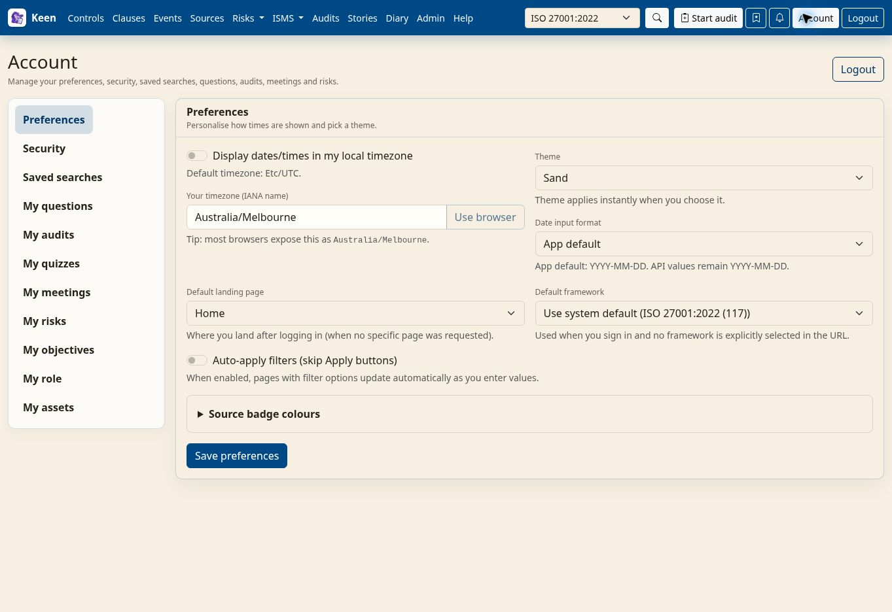

Using Keen
Review progress and collection health
Chapter 15 of 17
Review progress and personalize Keen
This chapter is about the regular rhythm of using Keen: reading the visualisations, keeping your own settings comfortable, finding out what changed, and knowing what to check when something looks wrong. The second half is for the people who keep the installation healthy.
Explore the Visualisations tabs
Where a page offers a Visualisations tab, it shows the same records as graphs, relationships, distributions or trends: which sources contribute evidence, how controls and risks relate, or how a measurement changes over time. The charts offered depend on the page.
Before you read a chart, check the selected framework, the chart's own filters, its date range and its legend. Zoom, select and follow linked records where the graph offers them, then open the underlying evidence or assessment. A sparse graph usually reflects the current scope or filters, so widen them before concluding that evidence is missing.
Search, visualisations and personal settings
Search and filters work together. When results look incomplete, check the active framework and date range first. Saved searches, also called Shortcuts, keep useful combinations for later.
Your account page gathers the questions and records you own or relate to, including audits, risks, objectives, organisation roles, assets and meetings. Its preferences cover date format, timezone, default landing page, default framework, theme and filter behaviour.
Open Account → Preferences to choose Sand or another light or dark palette. Theme changes apply immediately. Set date format, timezone, landing page, default framework, automatic filter application and source badge colours, then use Save preferences for the saved settings. Screenshots in this handbook use Sand.


Counts and connections in a visualisation show recorded relationships. Follow one back to its record before you draw an assurance conclusion.
Review changes and resolve problems
Two records answer “what happened?”. The Entity Changelog records semantic changes to supported records: who changed what, when, and the field differences. Admin → Audit trail holds the request audit trail of API requests, response status and timing. Use the changelog for the content change and the request log for the activity around it; neither is a complete recording of every click.
| Situation | Check |
|---|---|
| a control has no evidence | the active framework, the target reference, the source collection, the event fields and the definition preview |
| old mappings remain after a rule change | run Apply saved rule to past evidence and confirm its background job completes |
| a save conflicts | reload the latest record and reconcile before saving again |
| an action is unavailable | your permissions, with an administrator; reading and managing are separate |
Keep the management system current
Agree a review cadence and work through the same list each time: overdue risk treatments, ownership changes, expiring personnel assurance, supplier changes, document revisions, missing metric periods and audit coverage. Record decisions in meeting minutes, then update the underlying records.
Make Keen comfortable to return to: choose a light palette or its dark variant, such as Purple (dark) or Teal (dark), from the Theme list, set your default framework and landing page, and save Shortcuts for the views you repeat. When information seems to be missing, check the framework and date filters before changing any data.
Collection health, notifications and recovery
The rest of this chapter is for the people who run Keen. It explains what to look at when scheduled work does not appear, how to back up and restore, how to diagnose from the failed boundary, and how notifications and sign-in are chosen. Administering Keen has the detailed settings.
Check workers, schedules and metric delivery
Celery beat enqueues scheduled work and the workers execute it. When a collection, an audit occurrence or a historical mapping job is missing, look at both sides: is beat running (one instance only), and is a worker consuming its queue? Audit creation also waits for the configured look-ahead window, so a template can exist before its first audit does.
- For effectiveness metrics, send one authenticated payload and confirm it appears under the intended measure with the right key, value, unit, period and source. When a trend looks odd, distinguish repeated delivery, missing observations and automatically recorded zeros.
- Mail, calendar invitations and question or incident webhooks each need their own outbound configuration. Diagnose delivery failures without repeatedly notifying recipients, and keep the application record and the upstream acknowledgement as separate evidence.
Back up and restore Keen
A complete backup covers PostgreSQL, the referenced artefacts, the encryption material, the required configuration and secrets, and the release identifiers they belong to. Record backup success and restore-test success separately: only the second proves you can recover.
- Take a database dump to a protected destination, following the administrator guide. Inventory the matching S3 versions or local artefacts and keep the keys needed to decrypt them.
- Restore into an isolated, empty recovery environment with outbound integrations and schedules disabled, so a rehearsal cannot notify anyone or ingest on behalf of the live service.
- Use a compatible application version and check sign-in, a framework, a risk, a document version, an evidence mapping and an artefact download, with representative checksums.
- Rehearse migrations against the copy and record the schema revisions before and after.
- Keep the original deployment intact until recovery is verified and cutover is deliberate. Rolling back only a container is safe only if the older code supports the migrated schema.
Going deeper: retention is not deletion
Object retention and eventual deletion are different policies. Include noncurrent versions, legal holds and backups in the lifecycle plan.
Diagnose from the failed boundary
Start at the first thing that failed and confirm each recovery before moving on.
| Symptom | Check first | Confirm recovery |
|---|---|---|
| EC2 terminates before bootstrap | EC2 state reason, regional KMS calls, provisioner role and key state | Instance runs and bootstrap begins |
| Server runs but Keen is unavailable | Service logs, image pulls, database migrations, DNS and HTTPS | Readiness checks pass and owner can sign in |
| Browser reports 401 or 403 | OIDC issuer/client/callback, exact origin, session state and account permissions | Expected user succeeds; unauthorised identity remains denied |
| Events arrive without mappings | Collection identity, actual normalised fields, definition preview and target references | Positive and negative samples behave as intended |
| Old automatic mappings remain | Stale-mapping review and historical job status | Reviewed stale links removed; manual/imported links preserved |
| Audit or metric period missing | Beat, workers, look-ahead window or ingestion source and date range | Intended occurrence appears without duplicates |
| S3 AccessDenied | Principal, bucket/prefix, KMS key and conditional-write requirements | Own-tenant operation succeeds; other-tenant access stays denied |
Keep useful identifiers and timestamps in problem reports, and keep environment files, private state, tokens and credentials out of shared logs. Fix the failed permission or configuration while preserving TLS verification, isolation and request verification.
Configure questions and incident delivery
Question discussions work inside Keen on their own. For notifications, administrators can set KEEN_QUESTION_WEBHOOK_SLACK_URLS, KEEN_QUESTION_WEBHOOK_TEAMS_URLS, KEEN_QUESTION_WEBHOOK_GOOGLE_CHAT_URLS and KEEN_QUESTION_WEBHOOK_GENERIC_URLS; generic headers and webhook signing have their own settings. Test with a clearly labelled test question.
Incident declaration needs KEEN_INCIDENT_WEBHOOK_URL, with optional headers, signing secret, signature-header name and timeout in the matching KEEN_INCIDENT_WEBHOOK_* settings. Keen saves a declaration after a successful HTTP response; the receiving service owns the ticket from there.
Grant question.create, question.delete, incident.create and incident.delete according to responsibilities. Reading a record does not grant every action on it; replies are for the thread author and administrators, and the central question queue is administrative.
Choose authentication for your installation
An ordinary installation can use local accounts, generic OIDC, Google, GitHub or trusted-proxy authentication, as configured on the server. For OIDC, register the exact HTTPS callback and origin and test with an ordinary user as well as an administrator.
Going deeper: hosted mode and deployment basics
KEEN_HOSTED_MODE is a separate opt-in, owner-only deployment policy. Leave it disabled for an ordinary multi-user installation: it requires a configured OIDC owner identity and additional security settings, and it deliberately restricts other sign-in paths. Running on a cloud server is no reason to enable it.
For deployment and recovery, use your installation's Compose configuration and secrets, keep the mounted configuration and framework files, and back up the database and artefact storage. The API runs database migrations at startup before serving requests; review new migrations against a restored copy before upgrading.